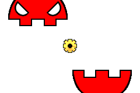
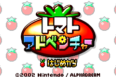

Tomato Adventure (Japan) (Virtual Console)
EEPROM 64K 🎮 Button Cheat 💾 MultiBoot
Cartridge Identity
- Game Code
AGLJ(FamilyAGL)- Header Title
TOMATO_ADV- Maker / Revision
01/ rev0- ROM Size
- 8.0 MiB (8,388,608 B)
- Save Media
EEPROM 64K- SHA-256
69d9dcf2b3a368d146dd1f9e2499d937fcd155762ecefecefc60c3a319b5acab- Engine / SDK Group
comm-004(98 families)
Verified Button-Combo Cheat
Zero-patch retail controller cheat (Wave 3): 4-way counterfactually verified in headless
libmgba. See all verified titles in the Button-Combo Cheats Catalog.
- Effect
- Hidden Multi-Cheat Table Sequence Unlock (ROM table 0x08454b9c)
- Button Sequence
A, SELECT, B, SELECT, A, SELECT, B, SELECT, A, LEFT- Verification Verdict
- Visual + RAM Unique Reaction
- Target RAM Address
0x03005086- ROM Table Address
0x08454b9c- Timing Protocol
boot=360f,hold=6f,release=6f,settle=60f- Activation Indicator
- Headless libmgba 4-way counterfactual verified: unique 240x160 framebuffer and RAM/VRAM state transition distinct from control, wrong, and reversed inputs
gbakit cheat verify AGLJ

Link Cable & Multiplayer Communications
This title contains detected communication capabilities: 💾 MultiBoot.
Detailed protocol specifications, SIO registers, Joybus commands, and MultiBoot sequences are documented in the Link & Multiplayer Reference.
- Single-Cart MultiBoot
- Single-Cartridge MultiBoot (Download Play) client/server handler · Thumb SWI 0x25 (
0xDF25):0x16e1ba,0x208e44,0x20beb8,0x21e050
Text, Fonts & Scene Data
- Primary Text Encoding
- Shift-JIS (uncompressed) (
52ASCII strings ·88Shift-JIS runs ·1LZ77 ASCII blocks) - Font & VWF Indicators
- No VWF Table 1bpp Font · BIOS SWIs: BitUnPack
0x10:22· LZ770x11/12:48· Huffman0x13:9· RLE0x14/15:16 - Scene & Packaging
104ROM pointer tables (≥32 entries,10≥200) ·36relativeu32TOCs ·628OAM metasprite hits
Hardware MMIO Subsystems
ppu_display0x8020bb4,0x80828b4,0x8082c88,0x8082c94,0x8083a04,0x8083eec,0x808409c,0x8086228,0x80862c8,0x8086630(+1 more)
Regional Variants & Revisions (Family AGL)
- Fanqiejiang Wangguo Da Maoxian (China) (Proto) (
AGLC, 8 MiB) - Tomato Adventure (Japan) (
AGLJ, 8 MiB)